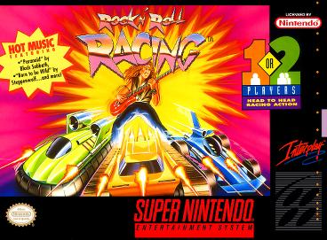
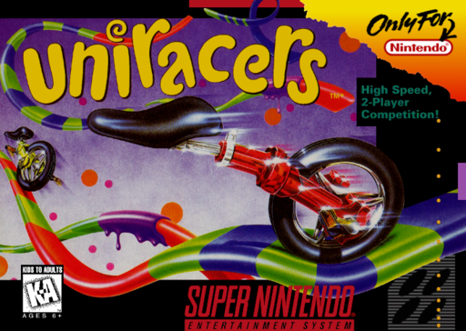
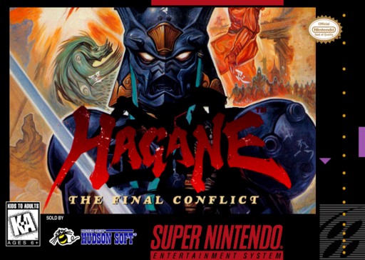
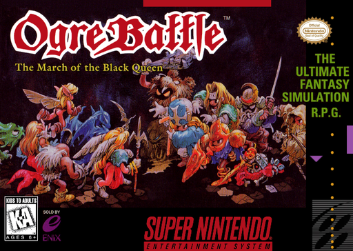
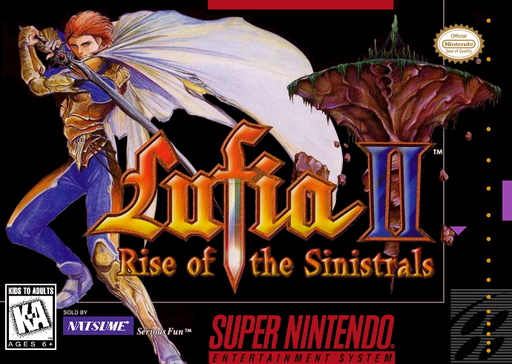
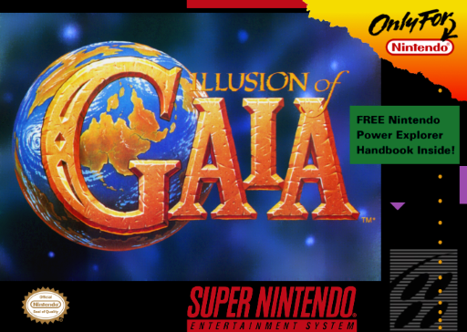
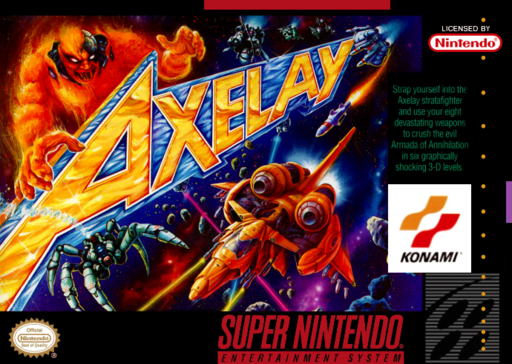
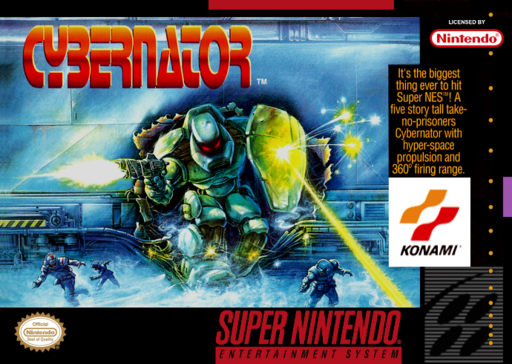
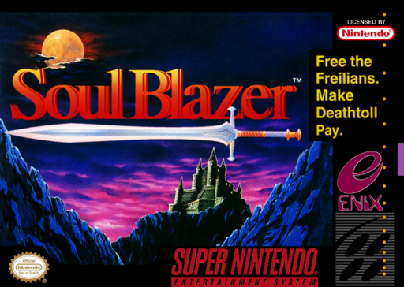
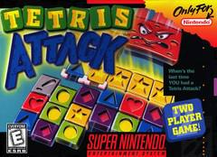

Mario World, Zelda y Chrono Trigger ya los conoces. Estos diez tambien fueron muy bien criticados y hoy casi nadie los nombra. Empezamos desde abajo.
03
#10
TOP

SNES
TARROVISIONCH 10
NO SIGNAL
Inserta gameplay aqui
ROCK N' ROLL RACING
SNES · 1993 · INTERPLAY
▶ POR QUECarreras con armas de Silicon & Synapse, hoy Blizzard, con una banda sonora de rock y metal que se sigue citando como de las mejores del SNES.
04
#9
TOP

SNES
TARROVISIONCH 09
NO SIGNAL
Inserta gameplay aqui
UNIRACERS
SNES · 1994 · NINTENDO
▶ POR QUECarreras de monociclos con acrobacias, de DMA Design, los futuros creadores de Grand Theft Auto. Nintendo Power lo puso octavo mejor juego de SNES de 1994.
05
#8
TOP

SNES
TARROVISIONCH 08
NO SIGNAL
Inserta gameplay aqui
HAGANE: THE FINAL CONFLICT
SNES · 1995 · HUDSON SOFT
▶ POR QUEAccion ninja cyborg de Hudson Soft, oscura y muy rapida. IGN lo puso 45 en su Top 100 SNES por su ambientacion y su ritmo.
06
#7
TOP

SNES
TARROVISIONCH 07
NO SIGNAL
Inserta gameplay aqui
OGRE BATTLE: THE MARCH OF THE BLACK QUEEN
SNES · 1995 · ENIX
▶ POR QUEEstrategia en tiempo real con alma de RPG, de Quest. IGN lo puso 41 en su Top 100 SNES y Nintendo Power lo incluyo entre los 200 mejores juegos de Nintendo.
07
#6
TOP

SNES
TARROVISIONCH 06
NO SIGNAL
Inserta gameplay aqui
LUFIA II: RISE OF THE SINISTRALS
SNES · 1996 · NATSUME
▶ POR QUERPG de Neverland con cientos de puzzles y sin combates aleatorios en las mazmorras. 80 % en GameRankings y un 10 sobre 10 de los lectores de Famitsu.
08
#5
TOP

SNES
TARROVISIONCH 05
NO SIGNAL
Inserta gameplay aqui
ILLUSION OF GAIA
SNES · 1994 · NINTENDO / QUINTET
▶ POR QUERPG de accion de Quintet con niveles inspirados en las maravillas del mundo. 80 % en GameRankings y 300.000 copias solo en Norteamerica.
09
#4
TOP

SNES
TARROVISIONCH 04
NO SIGNAL
Inserta gameplay aqui
AXELAY
SNES · 1992 · KONAMI
▶ POR QUEShooter de Konami que alterna niveles verticales y horizontales con efectos 3D del SNES. 81 % en GameRankings.
10
#3
PODIO

SNES
TARROVISIONCH 03
NO SIGNAL
Inserta gameplay aqui
CYBERNATOR
SNES · 1993 · KONAMI
▶ POR QUEAccion con mechas de Masaya, conocido en Japon como Assault Suits Valken. Super Play lo ubico 19 entre los mejores juegos de SNES.
11
#2
PODIO

SNES
TARROVISIONCH 02
NO SIGNAL
Inserta gameplay aqui
SOUL BLAZER
SNES · 1992 · ENIX
▶ POR QUEPrimer juego de Quintet, un RPG de accion donde liberas pueblos y los repueblas. 85,6 % en GameRankings, entre los mejores de este top.
12
#1
EL TRONO

SNES
TARROVISIONCH 01
NO SIGNAL
Inserta gameplay aqui
TETRIS ATTACK
SNES · 1996 · NINTENDO
▶ EL MEJOR CRITICADOPuzzle de Intelligent Systems con los personajes de Yoshi's Island. Tiene 90 % en GameRankings, la nota mas alta de este top.
13
ANALISIS DEL TOP
BUENOS Y OLVIDADOS
Los que tienen nota agregada van entre 79 y 90 %, y el resto aparece en las listas de mejores del SNES. Los eclipso algo mas grande: otro juego de su propio estudio, la consola que venia despues o simplemente llegar un año tarde.
14
TU TURNO
¿CUAL AGREGARIAS?
¿Cual es tu joya olvidada del SNES? Cuentanos en los comentarios. Suscribete a Retrotarros.